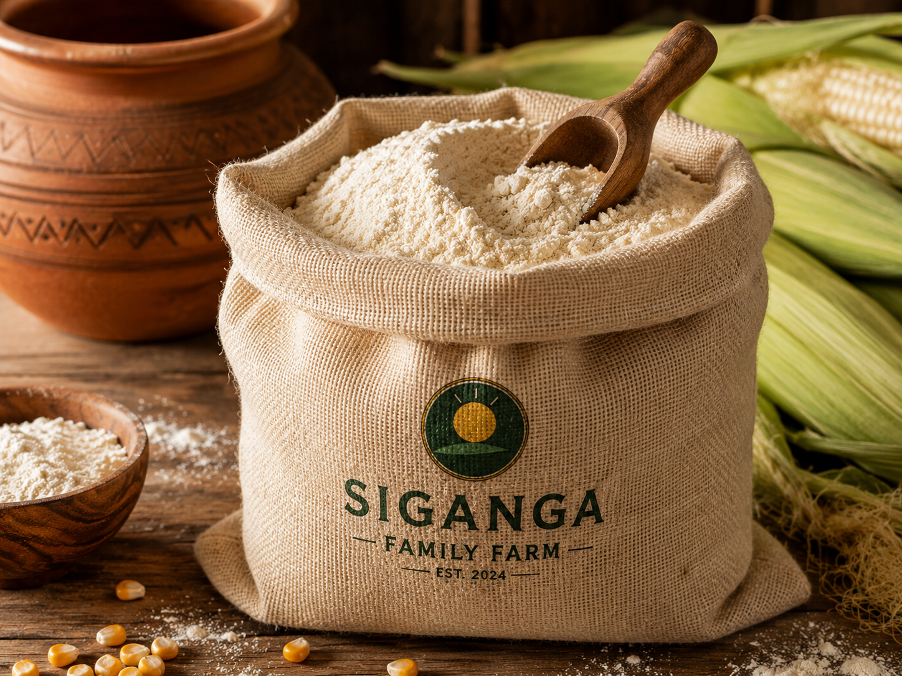
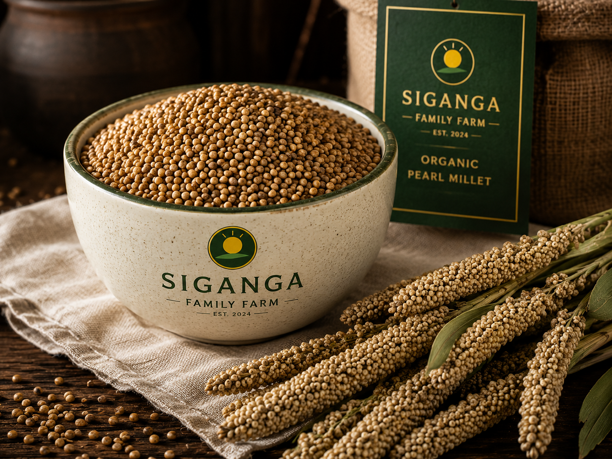
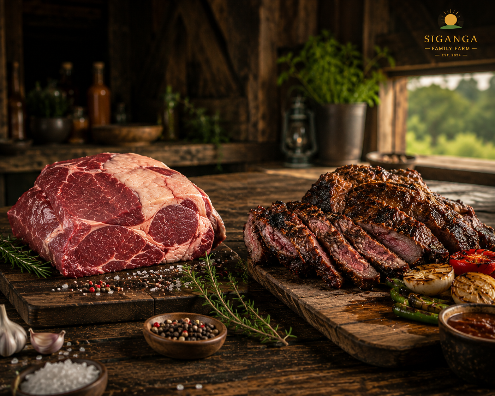
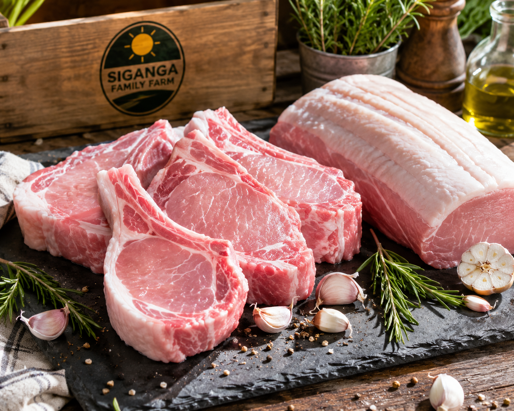
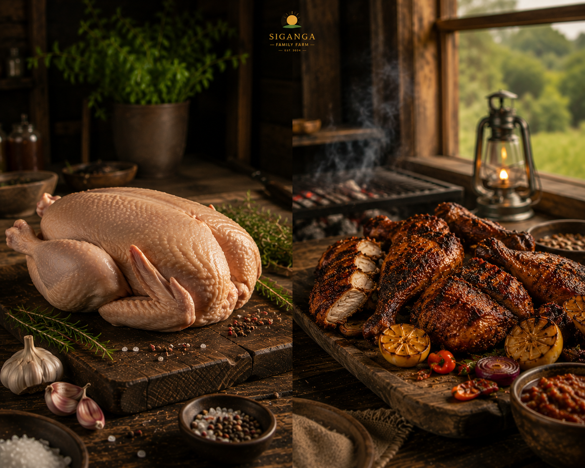
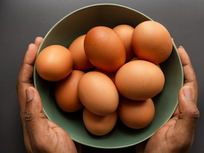
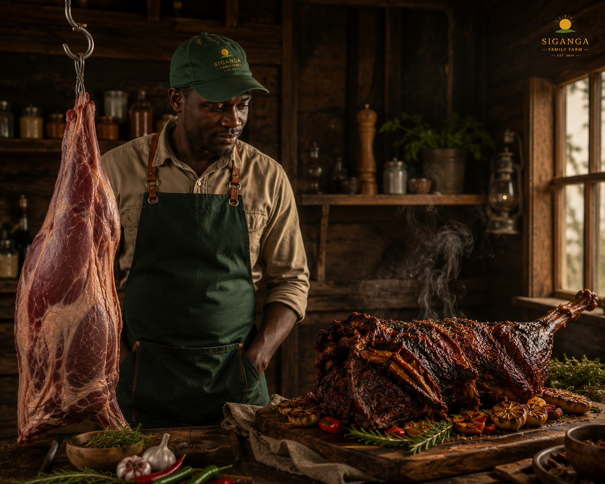
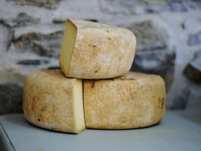

Premium Beef Tallow
100% grass-fed, deeply nourishing skin balm and high-clarity cooking fat.
Sustainably grown, carefully harvested, and processed directly on the Siganga Family pastures.
100% grass-fed, deeply nourishing skin balm and high-clarity cooking fat.

Artisanal lip care made from clean, moisturizing tallow blends.

A natural, chemical-free alternative rendered from pure farm fat.

Pure, unfiltered golden honey harvested from our native hives.

Stone-ground premium cornmeal flour milled right on the farmstead.

Nutrient-rich millet grain perfect for porridge and flatbreads.

Farm-blended chilli sauce made with freshly crushed field chillies.

Freshly extracted soothing gel from our modern aloe crop.

Premium tender cuts and traditional dried beef options.

Versatile butcher cuts and premium dried farm pork.

Free-range chickens delivering rich, authentic flavor.

Amber-yolk eggs gathered daily from roaming hens.
Flavorful duck cuts ideal for roasting and feasts.

Lean, tender pasture-grazed goat cuts for stews and roasts.

Creamy whole milk produced daily by our grass-fed dairy herd.

Nutrient-rich pure goat milk from pasture-browsing goats.

Tangy, small-batch farmstead cheese from our dairy kitchen.
Slow-clarified butter with a rich, nut-like aroma.

Freshly churned butter made from premium pasture cream.